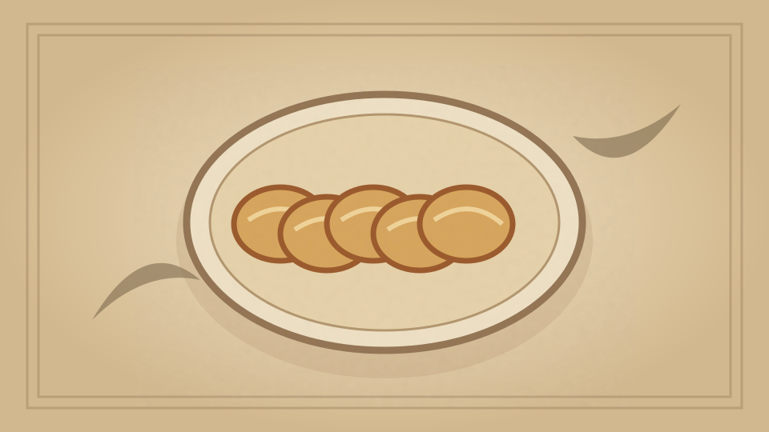

1910 · Fannie Merritt Farmer · BREAD AND BREAD MAKING
Sweet French Rolls
The Boston Cooking-School Cook Book

Historical Recipe
The following text is extracted from the 1910 edition, retaining historical terminology and quantities.
Original Ingredients & Directions
1 cup milk
1 yeast cake dissolved in
¼ cup lukewarm water
Flour
¼ cup sugar
1 teaspoon salt
1 egg
Yolk one egg
⅛ teaspoon mace
¼ cup melted butter
Scald milk; when lukewarm, add dissolved yeast cake and one and one-half cups flour; beat well, cover, and let rise until light. Add sugar, salt, eggs well beaten, mace, and butter, and enough more flour to knead; knead, let rise again, shape, and bake same as Salad Rolls, or roll in a long strip to one-fourth inch in thickness, spread with butter, roll up like jelly roll, and cut in one-inch pieces. Place pieces in pan close together, flat side down. A few gratings from the rind of a lemon or one-half teaspoon lemon extract may be substituted in place of mace.
61 Luncheon Rolls
Automatically extracted transcription; editorial verification pending. Historical instructions may not meet modern food-safety standards.